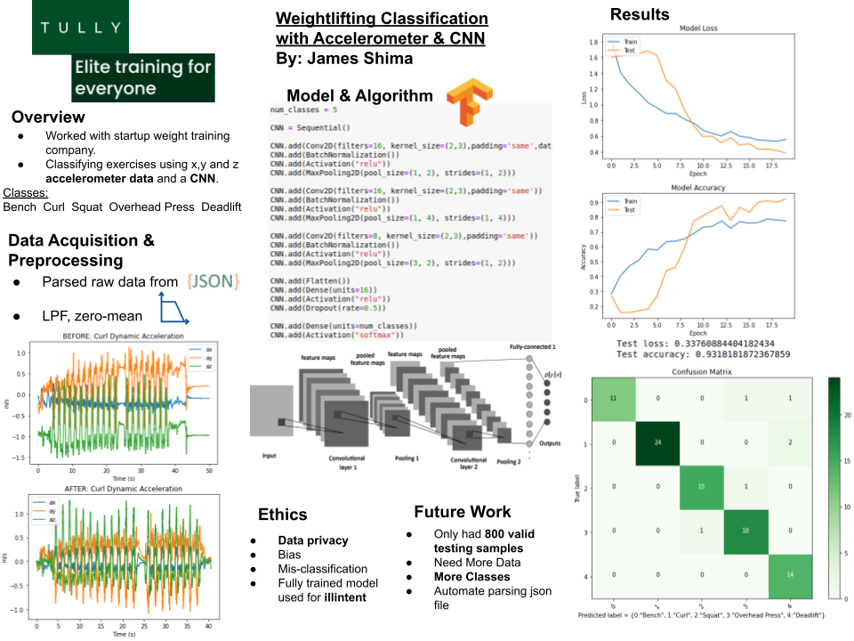

Projects
Home | Projects | Contact
Car Theft Prevention RF Jammer

C, C++, Aurduino

Car theft is on the rise with criminals able to caputre and replicate the signal sent by your car keys with as little as 20$ worth of equipment. But how can one protect themseleves from this? This project aims to provides a solution by jamming the same band your car keys use, preventing anyone from wirelessly accessing your car while the jammer is active and in range.
Exercise Deep Learning
Python, TensorFlow
Developed proof of concept Convolutional Nueral Network to classify five different excercises. This was done by preprosessing x,y,z axis acceleration data as a 3D tensor through a multilayered CNN. Due to a current small dataset (less than 1000 samples) accuracy ranged from 85-95% depending on the distribution of spliting the training and testing data.
Web M.D.++ (PostgreSQL/Python)
PostgreSQL, Python
Web M.D.++ is a backend recreation of Web M.D. to practice the design of a structucal relational database from the ground up using PostgreSQL, data cleansing and machine learning! This project won best in class against other database designs.
Clue Game

Java, Swing
Clue is a murder mystery board game for three to six players that was devised in 1943 by British board game designer Anthony E. Pratt. The game was first manufactured by Waddingtons in the United Kingdom in 1949. This project was created from the ground up using Java, JUnit, and Swing to create a single player interpretation of the board game. To play the game, click the github logo!